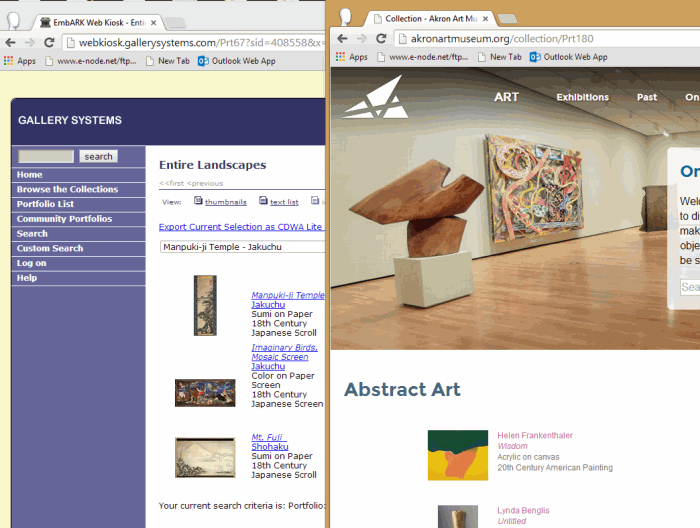

Download this manual in Windows or Macintosh format.
Gallery Systems
3214 College Avenue
Berkeley, CA 94705
web: http://support.gallerysystems.com
email: embarksupport@gallerysystems.com
phone: 510.652.8950 x234
Last updated June 24, 2014
